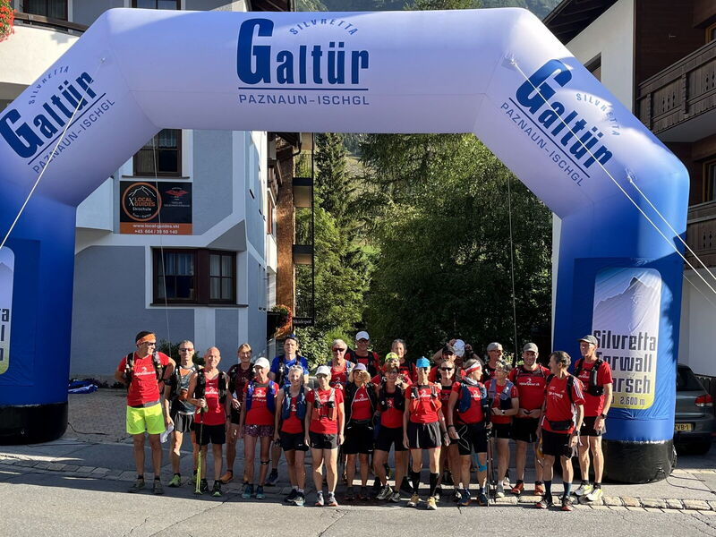

Alpinrunner
Ferwall Marsch

Wochenende vom 22.-24. August 2025 Ferwall Marsch
Mit Alpinrunner ein Genusswochenende in Galtür verbringen
zur Veranstalter Website Ferwall Marsch
Wir gehen gemeinsam zum Start, der Teamspirit spornt uns an
zeige dein Interesse mittels Formular unten. Detailausschreibung folgt
folgendes Programm ist vorgesehen:
- Freitag, individuelle Anreise nach Galtür
- Hotel Alpenresort Fluchthorn**** inkl. Halbpension
- Samstag, Ferwall Marsch , Streckenwahl 20, 33, 42 Km
- Sonntag, individuelle Heimreise
Fotos vom Erlebnislauf 2024 mit Ferwall Marsch am Samstag
Interesse bekundet haben folgende Freunde:
- aus Datenschutzgründen werden nur Vornamen veröffentlicht
- Marco & Petra
- Bruno & Thea
- Barbara
- Urs
- Doris & Marcel
- Ruedi
- Jean-Marie